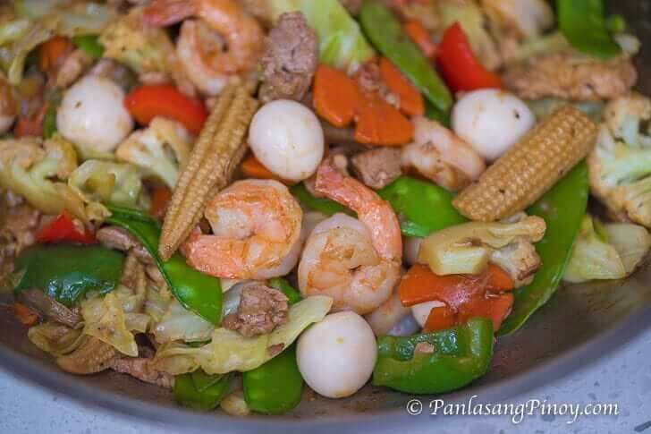

Chopsuey

Chinese-Filipino cuisine has been a part of our culture for decades. Chop Suey is a stir-fried vegetable dish that is cooked with meats such as chicken and pork. Shrimp and seafood can also be added. This chop suey recipe is special because it has almost every ingredient present. Chicken, pork, shrimp, and boiled quail eggs were all included in the recipe, along with fresh veggies.
Essentially, all recipes seem to be but a thoughtful intermingling of various ingredients. And this hopefully creates a dish dancing with flavors on your tongue. But shockingly enough, some of the most famous dishes arose from mere accidents or efforts to whip out a meal that won’t taste half bad. And if these efforts work out, we end up with something along the lines of the greatly endeared Chop Suey.
Ingredients
- 7 pieces shrimp cleaned and deveined
- 3 ounces pork sliced
- 3 ounces boneless chicken breast sliced
- 1 ½ cup cauliflower florets
- 1 piece carrot sliced crosswise into thin pieces
- 15 pieces snow peas
- 8 pieces baby corn
- 1 piece red bell pepper sliced into squares
- 1 piece green bell pepper sliced into squares
- 1 ½ cups cabbage chopped
- 12 pieces quail eggs boiled
- 1 piece yellow onion sliced
- 4 cloves garlic crushed
- ¼ cup soy sauce
- 1 ½ tablespoons oyster sauce
- ¾ cup water
- 1 tablespoon cornstarch diluted in ½ cup water
- ¼ teaspoon ground black pepper
- 3 tablespoons cooking oil
Steps
- Heat oil in a wok or pan
- Pan fry the shrimp for 1 minute per side. Remove from the wok. Set aside.
- Saute onion. Add garlic and continue to saute until the onion becomes soft.
- Add pork and chicken. Stir fry until light brown.
- Add soy sauce and oyster sauce. Stir.
- Pour water. Let boil. Cover and cook in medium heat for 15 minutes.
- Add cauliflower, carrots, bell peppers, snow peas, and young corn. Stir.
- Add cabbage. Toss. Cover and cook for 5 to 7 minutes.
- Put the pan-fried shrimp into the pot and add ground black pepper.
- Add the boiled quail eggs and cornstarch diluted in water. Toss.
- Transfer to a serving plate. Serve.
- Share and enjoy!